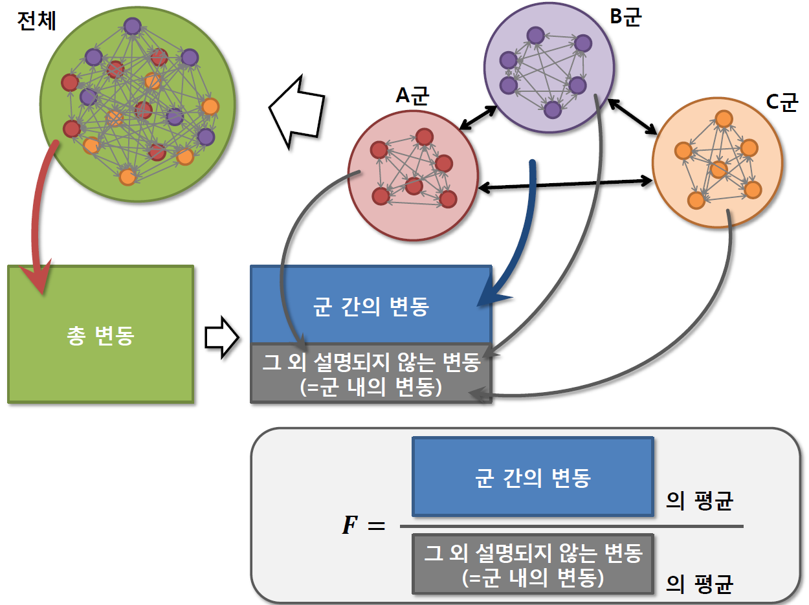
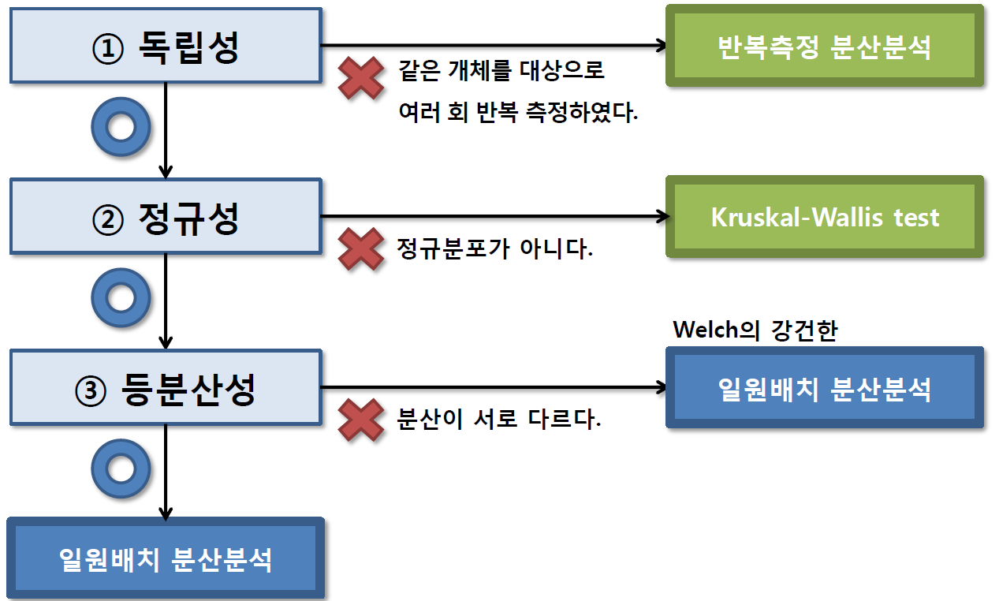
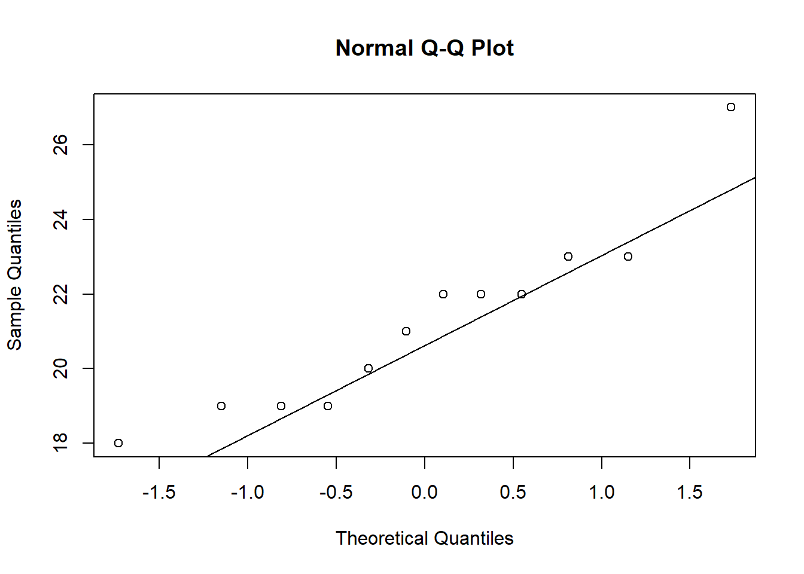

Chapter 2 분산분석
2.1 분산분석
- 분산분석(analysis of variance: ANOVA)은 R.A. Fisher에 의해 개발된 3개 이상(2집단 가능)의 모평균에 대한 분석 방법을 말한다.

- 실험계획법(experimental design)에서 가장 많이 사용되는 분석방법으로서, 특성값의 분산 또는 변동을 분석하는 방법. 즉, 특성값의 변동을 제곱합(sum of squares)으로 나타내고, 이 제곱합을 실험에 관련된 요인(factor)별로 분해하여 오차에 비해 큰 영향을 주는 요인이 무엇인가를 찾아내는 방법

요인의 수에 의한 분산분석 분류
일원배치 분산분석(one-way ANOVA): 요인의 수가 하나인 분산분석. 다른 요인은 측정값에 경미한 영향으로 무시할 수 있거나 또는 영향이 일정할 때 사용
이원배치 분산분석(two-way ANOVA): 측정값에 영향을 미치는 요인이 둘일 때의 분석으로 두 요인의 집단(수준)수 조합이 반복이 없는 경우와 있는경우로 분류하여 검증
이외 삼원배치 분산분석, 다원배치 분산분석 등이 있음
모형에 의한 분산분석 분류
모수 모형(fixed effect model)
변량 모형(random effect model)
혼합 모형(mixed effect model)
변동 분해

특성값의 변동을 나타내는 제곱합(총제곱합, total sum of squares: SST)은 요인에 의한 제곱합(treatment sum of squares: SSTr)과 오차로 인한 제곱합(error sum of squares: SSE)으로 분해
2.2 일원배치 분산분석
일원배치 분산분석(one-way ANOVA)은 \(t\)-test를 확장하여 요인은 하나이고, 요인에 의해 \(k\)개 집단(수준)으로 나뉜 표본들을 서로 비교 검정하는 방법
집단(수준)은 3개 이상(\(k \ge 3\)), 특성값은 하나로써 특성값에 대한 한 종류의 요인만의 영향을 조사하고자 할 때 사용하는 방법
특성
집단 수와 각 집단에서 취해지는 측정값의 반복수에는 별로 제한이 없음. 그러나 집단수는 \(3\sim 5\)수준, 반복수는 \(3\sim 10\) 정도가 많이 사용됨
반복수가 모든 수준에 대하여 같지 않아도 됨. 따라서 결측값(missing value)이 있어도 이를 추정하여 넣어 줄 필요가 없으며 그대로 해석 가능 함
실험의 측정은 실험 전체를 완전히 랜덤화하여 모든 특성값을 랜덤한 순서에 의하여 구해야 함
요인 \(A\)의 수준(집단)수가 \(k\)개(\(A_1, A_2, \cdots, A_k\))이며, 각 수준마다 \(n_i\)번씩 반복 실험을 할 경우, 일원배치 분산분석을 위한 자료 형태이다. 여기서 \(N=\sum_{i=1}^kn_i\)은 총 실험횟수이다.

여기서 \(i\)열의 합 \(T_i=\sum_{j=1}^{n_i} y_{ij}\), \(i\)열의 평균 \(\bar{y}_i=\frac{T_i}{n_i}\), 총 합계 \(T=\sum_{i=1}^k T_i\), 총 평균 \(\bar{y}=\frac{T}{N}\)
- 일원배치 분산분석 - 통계적 모형
\[\begin{aligned} y_{ij}&=\mu_i + \epsilon_{ij}, \quad i=1,2,\ldots,k, \quad j=1,2,\ldots,n_i \\ &=\mu + \alpha_i + \epsilon_{ij}, \quad \epsilon_{ij} \sim N(0, \sigma^2) \end{aligned} \]
여기서 \(\mu\): 실험전체의 모평균, \(\alpha_i\): \(i\)번째 처리가 주는 주효과이다. 단, \(\sum_{i=1}^k\alpha_i=0\)
- \(\epsilon_{ij}\): \(i\)번째 처리의 \(j\)번째 반복에서 얻은 측정값의 오차
- 오차 \(\epsilon_{ij}\)는 처리 \(A_i\)에서 \(j\)번째 측정된 \(y_{ij}\)가 수반하는 오차로서, 확률변수이며 다음과 같은 성질을 가짐
- \(\epsilon_{ij}\)는 랜덤하게 변하는 값이며 모평균은 \(0\)이고 분산은\(\sigma^2\)이다.
- \(\epsilon_{ij}\)는 정규분포 \(N(0,\sigma^2)\)으로부터 확률추출된 것이라고 가정하며, 이 가정은 다음을 의미한다.
정규성: 오차 \(\epsilon_{ij}\)는 정규분포를 따른다.
독립성: 임의의 \(\epsilon_{ij}\)와 \(\epsilon_{i'j'}\)(\(i\ne i'\) 또는 \(j\ne j'\))는 서로 독립이다.
불편성: 오차 \(\epsilon_{ij}\)의 기대값은 \(0\)이다.
등분산성: 오차 \(\epsilon_{ij}\)의 분산은 \(\sigma^2\)으로 어떤 \(i, j\)에 대해서도 일정하다.
- 오차 \(\epsilon_{ij}\)는 처리 \(A_i\)에서 \(j\)번째 측정된 \(y_{ij}\)가 수반하는 오차로서, 확률변수이며 다음과 같은 성질을 가짐

분산분석을 하려면 오차항의 가정에 따라 먼저 집단간의 분산이 동질함을 검정하여야 함. 이를 위해 Levene의 분산의 동질성 검정(Levene’s equality of variances test)을 이용
가설의 형태
귀무가설: \(H_0\): \(\sigma_1^2=\sigma_2^2=\cdots =\sigma_k^2\) (\(k\)개 집단의 분산은 동일하다).
대립가설: \(H_1\): 최소한 하나의 \(\sigma_i^2\)은 다르다.
검정통계량:
\[F=\frac{(N-k)\sum_{i=1}^k n_i(\bar{z}_i-\bar{z})^2}{(k-1)\sum_{i=1}^k\sum_{j=1}^{n_i}(z_{ij}-\bar{z}_i)^2}\]
여기서 \(z_{ij}=|y_{ij}-\bar{y}_i|\).
기각역: \[F>F(k-1,N-k;\alpha)\]
등분산이 가정되지 않는 경우 Brown-Forsythe 통계량을 계산하여 집단 평균의 동일성을 검정
평균에 대한 가설
귀무가설: \(H_0\): \(\mu_1 = \mu_2 = \cdots = \mu_k\) 또는 \(\alpha_1=\alpha_2=\cdots=\alpha_k=0\).
대립가설: \(H_1\): 최소한 하나의 \(\mu_i\)는 같지 않다. 또는 최소한 하나의 \(\alpha_i=0\)이 아니다.
분산분석의 가설검정은 분산분석표(ANOVA table)를 통해 이루어짐
분산분석표

변동 분해
총제곱합 \(SST(S_T)=\sum_{i=1}^k\sum_{j=1}^{n_i}(y_{ij}-\bar{y})^2\)
오차제곱합 \(SSE(S_E)=\sum_{i=1}^k\sum_{j=1}^{n_i} (y_{ij}-\bar{y}_i)^2\)
처리제곱합 \(SSTr(S_A)=\sum_{i=1}^k\sum_{j=1}^{n_i}(\bar{y}_i-\bar{y})^2\)
총제곱합 \(SST\)는 급내변동(variation within group)인 오차제곱합 \(SSE\)와 급간변동(variation between group)인 처리제곱합 \(SSTr\)의 합으로 구성됨. 즉, \[SST=SSE + SSTr\]
변동의 자유도
총변동의 자유도 \(\phi_T=N-1\)
급내변동의 자유도 \(\phi_E=N-k\)
급간변동의 자유도 \(\phi_A=k-1\)
평균제곱: 제곱합을 자유도로 나눈 것
오차평균제곱(mean squared error: MSE): \(V_E=\frac{S_E}{\phi_E}\)
처리평균제곱: \(V_A=\frac{S_A}{\phi_A}\)
검정통계량 \[F=\frac{V_A}{V_E} \sim F_{(k-1,N-k)}\]
-기각역 \[F \ge F_{(\alpha,k-1,N-k)}\]
2.2.1 사후분석(다중검정)
분산분석은 \(k\)개 집단의 평균이 유의미한 차이가 있는지 확인만 가능
즉, \(k\)개의 집단 중 하나의 집단이 다른 집단의 평균과 차이가 있는지 아니면 여러 집단이 동시에 서로서로 차이가 있는지 확인 불가능
분산분석의 결과가 유의미한 경우, 다시 말해서 최소한 하나 이상의 집단의 평균이 차이가 있다고 나타난 경우, 차이가 있는 집단을 찾는 방법을 사후분석(post hoc analysis) 또는 다중검정(multiple comparison)이라고 함
사후검정 또는 다중검정은 반드시 분산분석의 결과가 유의미한 경우에 이루어져야 함
사후 검정은 두 집단씩 짝을 이루어 검정하게 되며(마치 \(t\)-test 처럼) 이때 제1종 오류의 크기 \(\alpha\)를 유지하는 방법에 따라 여러가지 방법으로 나누어짐


예제) 면역이상에 대한 한 연구에서 자폐아, 정상아, 지진아에 대한 혈청 항원의 농도에 대해 조사하였다. 이 연구의 목적은 자폐아, 정상아, 지진아에 따라 혈청 항원의 농도에 유의한 차이가 있는가이다.

풀이)
가설: \(H_0\): 자폐아, 정상아, 지진아에 대한 혈청 항원의 농도는 모두 같다 vs \(H_1\): Not \(H_0\)
유의수준: \(\alpha=0.05\)
기각역: \(F_0 >F_{0.05}(2,68) = 3.15\)
검정통계량
\[SST=\sum_i \sum_j (y_{ij} -\bar{y} )^2 = 1517167.239\] \[SSt=\sum_i n_i (\bar{y}_i - \bar{y} )^2 =141234.602\] \[SSE=SST-SSt =1375932.638\] \[F=\frac{141234.602/2}{1375932.638/68}=3.47\]
ANOVA table

따라서 검정 통계량은 \(F=3.49\)
\(P\)-value: \[P(F(2,68)>3.49)=0.0361\]
결론: 검정통계량 값이 \(3.49>3.15\)로 유의수준 \(5\%\) 하에서 귀무가설 기각한다. 따라서 세 집단의 평균이 모두 동일하지는 않다. 즉, 최소한 하나의 집단은 평균이 다르다. \(P\)-value의 값 또한 유의수준 0.05보다 작으므로 귀무가설을 기각한다.
예제) 다음은 서로 다른 항우울제의 치료 효과를 비교하기 위한 연구이다. \(36\)명의 우울증 환자를 \(A\)군, \(B\)군, \(C\)군으로 \(12\)명씩 무작위 배정하여 각각 \(A\)약, \(B\)약, \(C\)약을 2개월 동안 투여한 뒤 우울증 점수를 측정하였다. 이 세가지 약의 치료 효과를 비교하라.

2.2.2 With R
- 데이터 입력
anova <- read.table(text='Patient group score
1 1 21
2 1 22
3 1 23
4 1 22
5 1 21
6 1 25
7 1 19
8 1 25
9 1 24
10 1 25
11 1 28
12 1 22
13 2 22
14 2 19
15 2 14
16 2 18
17 2 19
18 2 18
19 2 20
20 2 17
21 2 16
22 2 17
23 2 19
24 2 24
15 3 23
16 3 19
17 3 22
18 3 23
19 3 19
20 3 18
21 3 22
22 3 27
23 3 21
24 3 22
25 3 19
26 3 20
', header=T)
head(anova)## Patient group score
## 1 1 1 21
## 2 2 1 22
## 3 3 1 23
## 4 4 1 22
## 5 5 1 21
## 6 6 1 252.1 정규성 검정
tapply(anova$score,anova$group,shapiro.test) ## $`1`
##
## Shapiro-Wilk normality test
##
## data: X[[i]]
## W = 0.95826, p-value = 0.7588
##
##
## $`2`
##
## Shapiro-Wilk normality test
##
## data: X[[i]]
## W = 0.96468, p-value = 0.8479
##
##
## $`3`
##
## Shapiro-Wilk normality test
##
## data: X[[i]]
## W = 0.91146, p-value = 0.2227Shapiro-Wilk 정규성 검정법을 이용하여 집단별로 검정하면, p-value가 모두 유의수준 5%보다 높게 나타나 정규성 가정을 기각할 근거가 없다는 것을 알 수 있다. Q-Q plot을 통해 살펴보면 다음과 같다.
qqnorm(anova$score[anova$group==1])
qqline(anova$score[anova$group==1])
qqnorm(anova$score[anova$group==2])
qqline(anova$score[anova$group==2])
qqnorm(anova$score[anova$group==3])
qqline(anova$score[anova$group==3])
2.2 등분산성 검정
- Bartlett test
bartlett.test(score ~ group, data=anova)##
## Bartlett test of homogeneity of variances
##
## data: score by group
## Bartlett's K-squared = 0.08111, df = 2, p-value = 0.9603P-value가 0.9603으로 집단별 분산이 같다는 귀무가설을 기각하지 못하므로 등분산 가정을 만족한다.
library(car)
leveneTest(score ~ as.factor(group), data=anova)## Levene's Test for Homogeneity of Variance (center = median)
## Df F value Pr(>F)
## group 2 0 1
## 33Levene test에서도 p-value가 1로 나타나 등분산 가정을 만족한다.
- 분산분석
re <- aov(score ~ as.factor(group), data=anova)
summary(re)## Df Sum Sq Mean Sq F value Pr(>F)
## as.factor(group) 2 122.9 61.44 9.652 0.000501 ***
## Residuals 33 210.1 6.37
## ---
## Signif. codes: 0 '***' 0.001 '**' 0.01 '*' 0.05 '.' 0.1 ' ' 1ANOVA table을 살펴보면 F value는 9.652이고 P-value는 0.0005로 매우 유의하게 나타난다. 따라서 최소한 하나의 집단은 평균 차이가 있다는 것을 알 수 있다. 집단 별 평균을 살펴보면 다음과 같다.
with(anova, tapply(score,group,mean ))## 1 2 3
## 23.08333 18.58333 21.25000이를 Box-plot으로 살펴보면 다음과 같다.
boxplot(score~group, data=anova)
- 사후검정
사후검정을 위해 “DescTools” 패키지를 이용한다. 이 패키지는 Tukey의 HSD, Bonferroni, LSD, Sheffe, Duncan 등의 방법을 제공한다. 사후 검정은 모든 조합 가능한 쌍에 대해 비교를 하기 때문에 FamilyWise Error Rate (FWER)이 증가하게 되며, 사후 검정법은 이 FWER을 원하는 유의수준 \(\alpha\)로 조정하기 위한 방법이다. FWER은 여러 개의 가설 검정을 할 때 적어도 하나의 가설에서 1종 오류가 발생할 가능성을 의미한다.
사후검정은 분산분석에서 유의한 결과가 나온 경우에 시행하며, 사후검정법 간의 결과에 서로 차이가 나타날 수 있다.
4.1 Fisher’s Least Significant Difference - 최소한의 유의미한 차이를 의미하며 유의수준을 보정하지 않기때문에 FWER이 높다.
library(DescTools)
PostHocTest(re, method="lsd")##
## Posthoc multiple comparisons of means : Fisher LSD
## 95% family-wise confidence level
##
## $`as.factor(group)`
## diff lwr.ci upr.ci pval
## 2-1 -4.500000 -6.5956761 -2.4043239 0.00012 ***
## 3-1 -1.833333 -3.9290095 0.2623428 0.08432 .
## 3-2 2.666667 0.5709905 4.7623428 0.01421 *
##
## ---
## Signif. codes: 0 '***' 0.001 '**' 0.01 '*' 0.05 '.' 0.1 ' ' 1결과를 살펴보면 1-2 집단과 2-3 집단에서 차이가 있고 1-3 집단은 차이가 없는 것으로 나타난다.
4.2 Bonferroni Correction - 본페로니 방법은 모든 집단을 짝지어 t-test를 수행하며 이때 수행한 횟수에 따라 유의수준을 조정한다. 즉, 짝지어 비교를 3번 하면, 유의수준을 \(\alpha/3\)의 수준으로 검정한다. FWER은 중간 정도이다.
PostHocTest(re, method="bonferroni")##
## Posthoc multiple comparisons of means : Bonferroni
## 95% family-wise confidence level
##
## $`as.factor(group)`
## diff lwr.ci upr.ci pval
## 2-1 -4.500000 -7.09803474 -1.9019653 0.00035 ***
## 3-1 -1.833333 -4.43136807 0.7647014 0.25295
## 3-2 2.666667 0.06863193 5.2647014 0.04264 *
##
## ---
## Signif. codes: 0 '***' 0.001 '**' 0.01 '*' 0.05 '.' 0.1 ' ' 1본페로니 방법에서도 1-2 집단간, 2-3 집단간 차이가 있는 것으로 나타난다.
4.3 Tuckey’s Honestly Significant Difference
PostHocTest(re, method="hsd")##
## Posthoc multiple comparisons of means : Tukey HSD
## 95% family-wise confidence level
##
## $`as.factor(group)`
## diff lwr.ci upr.ci pval
## 2-1 -4.500000 -7.0275596 -1.9724404 0.00034 ***
## 3-1 -1.833333 -4.3608929 0.6942262 0.19198
## 3-2 2.666667 0.1391071 5.1942262 0.03688 *
##
## ---
## Signif. codes: 0 '***' 0.001 '**' 0.01 '*' 0.05 '.' 0.1 ' ' 1Tukey 방법도 1-2, 2-3 그룹에서 차이를 보인다.
4.4 Scheffe’s method - FWER이 가장 낮으나 보수적이어서 2종 오류의 가능성도 높음
PostHocTest(re, method="scheffe")##
## Posthoc multiple comparisons of means: Scheffe Test
## 95% family-wise confidence level
##
## $`as.factor(group)`
## diff lwr.ci upr.ci pval
## 2-1 -4.500000 -7.14022200 -1.8597780 0.00054 ***
## 3-1 -1.833333 -4.47355534 0.8068887 0.22038
## 3-2 2.666667 0.02644466 5.3068887 0.04732 *
##
## ---
## Signif. codes: 0 '***' 0.001 '**' 0.01 '*' 0.05 '.' 0.1 ' ' 1Scheffe 방법도 1-2, 2-3 그룹에서 차이를 보인다.
2.2.3 With SAS
SAS Code
DATA anova;
INPUT patient group score @@;
CARDS;
1 1 21 13 2 22 15 3 23
2 1 22 14 2 19 16 3 19
3 1 23 15 2 14 17 3 22
4 1 22 16 2 18 18 3 23
5 1 21 17 2 19 19 3 19
6 1 25 18 2 18 20 3 18
7 1 19 19 2 20 21 3 22
8 1 25 20 2 17 22 3 27
9 1 24 21 2 16 23 3 21
10 1 25 22 2 17 24 3 22
11 1 28 23 2 19 25 3 19
12 1 22 24 2 24 26 3 20
;
run;proc means data=anova;
class group;
var score;
run;

PROC ANOVA data=anova;
CLASS group;
MODEL score=group;
means group /hovtest welch tukey duncan lines;
RUN;


2.3 이원배치 분산분석
이원배치 분산분석(two-way ANOVA)은 특성값에 영향을 미치는 두 요인의 효과에 대하여 조사하고자 할 때 이용되는 방법
이원배치 분산분석은 각 처리수준 조합내에서 반복이 있는 경우와 반복이 없는 경우로 나누어지며, 여기서는 반복이 있는 경우를 살펴본다.
이원배치 분산분석 개요
등분산 검정
교호작용 효과(interaction effect) 검정
교호작용이 없다면 주효과(main effect) 검정
교호작용이 있다면 교호작용을 반영한 교차 검정
요인 \(A\)의 수준(집단)수가 \(a\), 요인 \(B\)의 수준이 \(b\)라고 하고 각 수준 조합에서 \(n\)번씩 반복 실험을 할 경우, 이원배치 분산분석을 위한 자료 형태는 다음과 같다.

이원배치 분산분석 - 통계적 모형 \[\begin{aligned} y_{ijk}&=\mu_{ij} + \epsilon_{ijk}, \quad i=1,2,\ldots,a, \quad j=1,2,\ldots,b, \quad k=1,2,\ldots,n \\ &=\mu + \alpha_i + \beta_j + (\alpha\beta)_{ij}+\epsilon_{ijk} , \quad \epsilon_{ijk} \sim N(0, \sigma^2) \end{aligned} \]
여기서 조건은 다음과 같다.
\(\mu\): 실험전체의 모평균
\(\alpha_i\): 요인 \(A\)의 \(i\)번째 처리가 주는 주효과
\(\beta_j\): 요인 \(B\)의 \(j\)번째 처리가 주는 주효과
(\(\alpha\beta)_{ij}\): 요인 \(A\)의 \(i\)번째 처리와 요인 \(B\)의 \(j\)번째 처리의 교호작용 효과
\(\epsilon_{ijk}\): 요인 \(A\)의 \(i\)번째 처리와 요인 \(B\)의 \(j\)번째 처리 내 \(k\)번째 반복에서 얻은 측정값의 오차
분산분석을 하려면 오차항의 가정에 따라 먼저 집단간의 분산이 동질함을 검정하여야 한다. 이를 위해 Levene의 분산의 동질성 검정(Levene’s equality of variances test)을 이용
가설의 형태
귀무가설: \(H_0\): \(\sigma_{11}^2=\sigma_{12}^2=\cdots =\sigma_{ij}^2\)(\(i,j\) 집단의 분산은 동일하다).
대립가설: \(H_1\): 최소한 하나의 \(\sigma_{ij}^2\)은 다르다.
검정통계량: \[F=\frac{ab(n-1)\sum_{i=1}^a\sum_{j=1}^b n(\bar{z}_{ij}-\bar{z})^2}{(ab-1)\sum_{i=1}^a\sum_{j=1}^{b}\sum_{k=1}^n(z_{ijk}-\bar{z}_{ij})^2}\]
여기서 \(z_{ijk}=|y_{ijk}-\bar{y}_{ij}|\).
기각역: \[F>F_{\alpha}(ab-1,ab(n-1))\]
등분산이 가정되지 않는 경우 비모수(nonparameteric) 검정법을 이용함
평균에 대한 가설
귀무가설1: \(\alpha_1=\alpha_2=\cdots=\alpha_a=0\)
귀무가설2: \(\beta_1=\beta_2=\cdots=\beta_b=0\)
귀무가설3: \(\alpha\beta_{11}=\alpha\beta_{12}=\cdots=\alpha\beta_{ij}=0\)
대립가설: \(H_1\): Not \(H_0\)
분산분석표

변동 분해
\(SST=\sum_i\sum_j\sum_k (y_{ijk}-\bar{y})^2\)
\(SSA=bn\sum_i(\bar{y}_{i.}-\bar{y})^2\)
\(SSB=an\sum_j(\bar{y}_{.j}-\bar{y})^2\)
\(SSAB=n\sum_i\sum_j(\bar{y}_{ij}-\bar{y}_{i.}-\bar{y}_{.j}+\bar{y})^2\)
\(SSE(S_E)=\sum_i\sum_j\sum_k (y_{ijk}-\bar{y}_{ij})^2\)
총제곱합 \(SST\)는 \(A\)요인 수준간의 변동 \(SSA\), \(B\)요인 수준간의 변동 \(SSB\)와 요인 \(A,B\)의 교호작용에 의한 변동 \(SSAB\), 집단내의 변동 \(SSE\)로 분해하여 얻어짐. 즉, \[SST=SSA + SSB+SSAB+SSE\]
변동의 자유도
\(SST\): \(abn-1\)
\(SSA\): \(a-1\)
\(SSB\): \(b-1\)
\(SSAB\): \((a-1)(b-1)\)
\(SSE\): \(ab(n-1)\)
평균제곱
\(MSA\): \(SSA/(a-1)\)
\(MSB\): \(SSB/(b-1)\)
\(MSAB\): \(SSAB/((a-1)(b-1))\)
\(MSE\): \(SSE/(ab(n-1))\)
검정통계량 \[F_1=\frac{MSA}{MSE} \sim F_{(a-1,ab(n-1))}\] \[F_2=\frac{MSB}{MSB} \sim F_{(b-1,ab(n-1))}\] \[F_3=\frac{MSAB}{MSE} \sim F_{((a-1)(b-1),ab(n-1))}\]
2.3.1 교호작용
만약 요인 \(A\)의 효과가 요인 \(B\)의 수준에 따라 다르게 나타날 때(혹은 요인 \(B\)의 효과가 요인 \(A\)의 수준에 따라 다르게 나타날 때) 두 요인간에 교호작용(상호작용, interaction)이 있음
교호작용 예

이원배치 분산분석 검정 순서
교호작용이 유의한지 검정
만약, 교호작용이 유의하다면, 그대로 해석하고 분석 종료
혹은 두 요인의 수준을 조합하여 새로운 변수를 생성 후 일원배치 분산분석 시행
만약, 교호작용이 유의하지 않다면, 모형에서 교호작용 항을 제거하고 다시 분석
예제) 세 종류의 호르몬 처리와 성별에 따라 혈액 칼슘 값에 차이가 있는지를 알아보기 위해 남녀 각 \(15\)명씩을 선정하여 이들을 세 그룹으로 나누어 세 가지 호르몬 처리를 한 후 혈액 칼슘을 측정하였다. 호르몬 처리 및 성별에 따라 혈액 칼슘 값이 차이가 있는지 검정하라.

2.3.2 With R
- 데이터 입력
anova2 <- read.table(text='gender trt rep calcium
male trt1 1 16.87
male trt1 2 16.18
male trt1 3 17.12
male trt1 4 16.83
male trt1 5 17.19
male trt2 1 19.07
male trt2 2 18.77
male trt2 3 17.63
male trt2 4 16.99
male trt2 5 18.04
male trt3 1 32.45
male trt3 2 28.71
male trt3 3 34.65
male trt3 4 28.79
male trt3 5 24.46
female trt1 1 15.86
female trt1 2 14.92
female trt1 3 15.63
female trt1 4 15.24
female trt1 5 14.8
female trt2 1 17.2
female trt2 2 17.64
female trt2 3 17.89
female trt2 4 16.78
female trt2 5 16.72
female trt3 1 30.54
female trt3 2 32.41
female trt3 3 28.97
female trt3 4 28.46
female trt3 5 29.65
', header=T)
head(anova2)## gender trt rep calcium
## 1 male trt1 1 16.87
## 2 male trt1 2 16.18
## 3 male trt1 3 17.12
## 4 male trt1 4 16.83
## 5 male trt1 5 17.19
## 6 male trt2 1 19.07- 평균 비교
aggregate(calcium ~ gender, data=anova2, FUN="mean")## gender calcium
## 1 female 20.84733
## 2 male 21.58333aggregate(calcium ~ trt, data=anova2, FUN="mean")## trt calcium
## 1 trt1 16.064
## 2 trt2 17.673
## 3 trt3 29.909aggregate(calcium ~ gender+trt, data=anova2, FUN="mean")## gender trt calcium
## 1 female trt1 15.290
## 2 male trt1 16.838
## 3 female trt2 17.246
## 4 male trt2 18.100
## 5 female trt3 30.006
## 6 male trt3 29.812- 이원배치 분산분석
re <- aov(calcium ~ gender * trt, data=anova2)
summary(re)## Df Sum Sq Mean Sq F value Pr(>F)
## gender 1 4.1 4.1 1.278 0.269
## trt 2 1146.6 573.3 180.355 3.47e-15 ***
## gender:trt 2 3.8 1.9 0.605 0.554
## Residuals 24 76.3 3.2
## ---
## Signif. codes: 0 '***' 0.001 '**' 0.01 '*' 0.05 '.' 0.1 ' ' 1분산분석표를 살펴보면 gender와 trt의 교호작용에 대한 P-value는 0.554로 유의하지 않기 때문에 교호작용은 없는 것으로 판단된다. 이 경우, 교호작용을 제외한 주효과 모형을 다시 적합하여 분석한다.
re <- aov(calcium ~ gender + trt, data=anova2)
summary(re)## Df Sum Sq Mean Sq F value Pr(>F)
## gender 1 4.1 4.1 1.318 0.261
## trt 2 1146.6 573.3 186.009 3.94e-16 ***
## Residuals 26 80.1 3.1
## ---
## Signif. codes: 0 '***' 0.001 '**' 0.01 '*' 0.05 '.' 0.1 ' ' 1교호작용을 제외한 분산분석표를 살펴보면, gender의 P-value는 0.261로 유의하지 않고, 즉, 성별에 따른 calcium은 차이가 없게 나타났다. trt의 경우에는 P-value가 3.94e-16으로 매우 유의하게 나타났다. 따라서 trt에 따라서 calcium은 차이가 있다고 할 수 있다.
- 교호작용이 유의한 경우
위의 예제에서는 교호작용이 유의하지 않게 나타났다. 만일 교호작용이 유의하게 나타난다면 어떻게 해야 하는가. 아래의 예제를 살펴보자.
interac <- read.table(text='country gender ind
A F 88
A F 103
A F 111
A F 77
A F 104
A M 65
A M 54
A M 55
A M 54
A M 51
K F 55
K F 50
K F 52
K F 61
K F 70
K M 39
K M 35
K M 31
K M 32
K M 34', header=T)
head(interac)## country gender ind
## 1 A F 88
## 2 A F 103
## 3 A F 111
## 4 A F 77
## 5 A F 104
## 6 A M 65국가와 성별을 요인으로 두고 ind의 차이가 있는지 살펴보자.
re <- aov(ind ~ as.factor(country) * as.factor(gender), data=interac)
summary(re)## Df Sum Sq Mean Sq F value Pr(>F)
## as.factor(country) 1 4590 4590 62.455 6.50e-07 ***
## as.factor(gender) 1 5152 5152 70.096 3.06e-07 ***
## as.factor(country):as.factor(gender) 1 378 378 5.149 0.0374 *
## Residuals 16 1176 74
## ---
## Signif. codes: 0 '***' 0.001 '**' 0.01 '*' 0.05 '.' 0.1 ' ' 1분산분석표를 살펴보면 country와 gender간 교호작용의 P-value가 0.0374로 유의한 것을 알 수 있다. 이는 국가와 성별의 조합에 의한 ind의 값이 차이가 있다는 것을 의미한다. 따라서 해당 조합을 통한 일원배치 분산분석으로 접근하거나 또는 국가 혹은 성별을 고정시킨 상태에서 다른 요인의 효과를 일원배치 분산분석을 통해 검정한다.
먼저 해당 조합을 고려한 일원배치 분석을 생각해보자. 2개 국가와 2개의 성별 조합은 총 4개의 집단으로 구성된다.
interac$group <- paste(interac$country, interac$gender)re <- aov(ind ~ as.factor(group), data=interac)
summary(re)## Df Sum Sq Mean Sq F value Pr(>F)
## as.factor(group) 3 10121 3374 45.9 4.39e-08 ***
## Residuals 16 1176 74
## ---
## Signif. codes: 0 '***' 0.001 '**' 0.01 '*' 0.05 '.' 0.1 ' ' 1PostHocTest(re, method="bonferroni")##
## Posthoc multiple comparisons of means : Bonferroni
## 95% family-wise confidence level
##
## $`as.factor(group)`
## diff lwr.ci upr.ci pval
## A M-A F -40.8 -57.11172 -24.488282 7.3e-06 ***
## K F-A F -39.0 -55.31172 -22.688282 1.3e-05 ***
## K M-A F -62.4 -78.71172 -46.088282 2.3e-08 ***
## K F-A M 1.8 -14.51172 18.111718 1.0000
## K M-A M -21.6 -37.91172 -5.288282 0.0064 **
## K M-K F -23.4 -39.71172 -7.088282 0.0032 **
##
## ---
## Signif. codes: 0 '***' 0.001 '**' 0.01 '*' 0.05 '.' 0.1 ' ' 1이번에는 한 요인을 고정한 상태에서 다른 요인의 차이가 있는지 살펴보자. 이를 위해 ‘phia’ 패키지가 필요하다.
library(phia)
options(scipen=6) # 4.11e-05 처럼 표기되는 것을 막아준다.
re <- aov(ind ~ as.factor(country) * as.factor(gender), data=interac)먼저 country를 고정시킨 후 gender의 결과를 살펴보자.
testInteractions(
re,
fixed = "as.factor(country)",
across = "as.factor(gender)",
data = interac
)## F Test:
## P-value adjustment method: holm
## Value Df Sum of Sq F Pr(>F)
## A 40.8 1 4161.6 56.620 0.000002433 ***
## K 23.4 1 1368.9 18.625 0.000533 ***
## Residuals 16 1176.0
## ---
## Signif. codes: 0 '***' 0.001 '**' 0.01 '*' 0.05 '.' 0.1 ' ' 1결과표를 살펴보면 A국과 K국 모두 성별 차이가 통계적으로 유의미(p < .05)하다. 다음으로 성별을 고정시켰을 때, 국가간 차이를 확인해보자.
testInteractions(
re,
fixed = "as.factor(gender)",
across = "as.factor(country)",
data = interac
)## F Test:
## P-value adjustment method: holm
## Value Df Sum of Sq F Pr(>F)
## F 39.0 1 3802.5 51.735 0.000004285 ***
## M 21.6 1 1166.4 15.869 0.001068 **
## Residuals 16 1176.0
## ---
## Signif. codes: 0 '***' 0.001 '**' 0.01 '*' 0.05 '.' 0.1 ' ' 1성별을 고정한 경우 국가간의 차이는 모두 유의한 것으로 나타난다. 이는 4개의 그룹으로 묶어서 일원배치 분산분석을 하는 경우의 결과와 동일한 방향을 나타낸다.
2.3.3 With SAS
SAS Code
DATA calcium;
format gender $ 8.;
DO gender='male' , ' female';
DO trt='trt1','trt2','trt3';
DO rep=1,2,3,4,5;
INPUT calcium @@;
OUTPUT;
END; END;END;
CARDS;
16.87 16.18 17.12 16.83 17.19
19.07 18.77 17.63 16.99 18.04
32.45 28.71 34.65 28.79 24.46
15.86 14.92 15.63 15.24 14.80
17.20 17.64 17.89 16.78 16.72
30.54 32.41 28.97 28.46 29.65
;
RUN;proc means data=calcium;
class gender trt;
var calcium;
run;
PROC GLM data=calcium;
CLASS gender trt;
MODEL calcium=gender trt gender*trt;
MEANS trt/ TUKEY;
RUN;
PROC GLM data=calcium;
CLASS gender trt;
MODEL calcium=gender trt ;
MEANS trt/ TUKEY;
RUN;